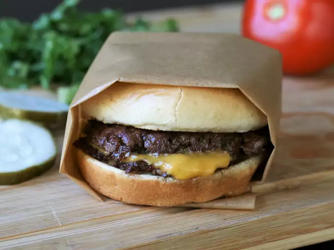

Odin Recipes
"Recipes are by nature derivative and meant to
be shared - that is how they improve, are
changed, how new ideas are formed. To stop a
recipe in it's tracks, to label it "secret"
just seems mean."
Here are our top picks of the month...

Click here for Recipe

Click here for Recipe